Este projeto tem como objetivo prever quantos produtos serão comprados no mês, tratando-se de um problema de regressão com campo alvo purchased_last_month. A questão de pesquisa central é: quais atributos impactam mais na quantidade de vendas e como se correlacionam?
Resumo inicial dos dados e possíveis problemas, como valores ausentes ou outliers. O gráfico abaixo mostra a correlação entre as variáveis numéricas:
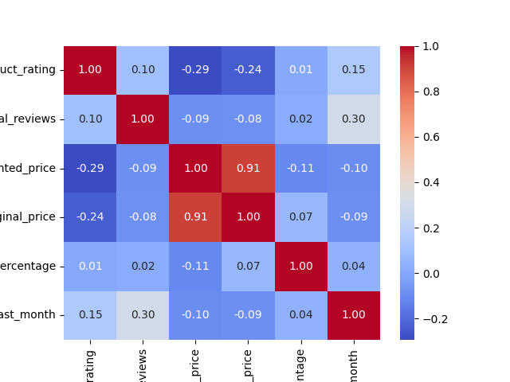
Histograma da variável product_rating: distribuição e tendências.
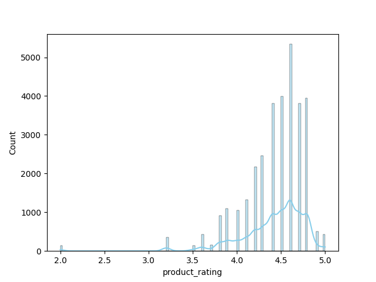
Boxplot da variável product_rating: mediana, quartis e outliers.
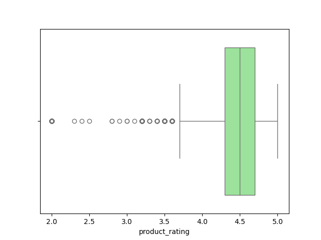
Histograma da variável total_reviews: distribuição e tendências.
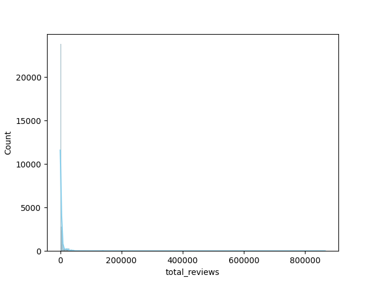
Boxplot da variável total_reviews: mediana, quartis e outliers.
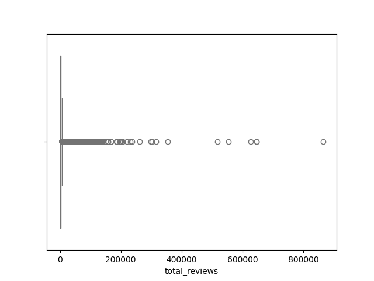
Histograma da variável discounted_price: distribuição e tendências.
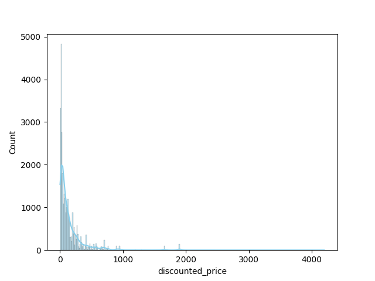
Boxplot da variável discounted_price: mediana, quartis e outliers.
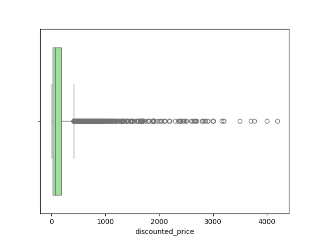
Histograma da variável original_price: distribuição e tendências.
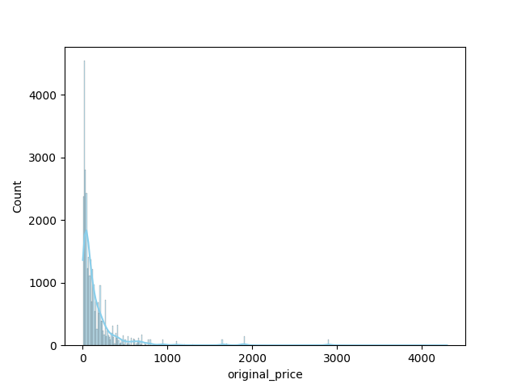
Boxplot da variável original_price: mediana, quartis e outliers.
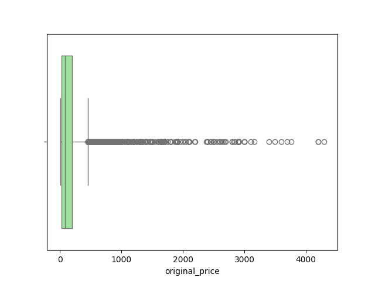
Histograma da variável discount_percentage: distribuição e tendências.
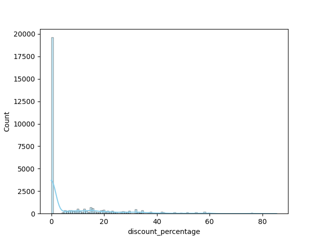
Boxplot da variável discount_percentage: mediana, quartis e outliers.
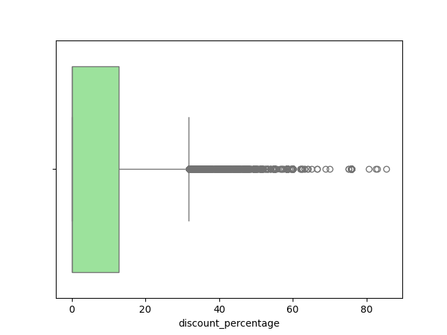
Para garantir a validade do modelo, o pré-processamento (normalização, codificação de variáveis categóricas e tratamento de ausentes) foi aplicado **após** a separação do conjunto de treino e teste (Pipeline).
Modelos testados: LinearRegression, RandomForest, GradientBoosting, RandomForest_Otimizado
| Modelo | MAE | RMSE | R2 |
|---|---|---|---|
| RandomForest | 174.72 | 1347.94 | 0.9447 |
| GradientBoosting | 362.89 | 1411.77 | 0.9394 |
| RandomForest_Otimizado | 411.03 | 1545.10 | 0.9274 |
| LinearRegression | 865.85 | 5846.54 | -0.0398 |
O modelo **RandomForest** foi considerado o melhor com base em R2. Os fatores que mais influenciam as vendas são:
Gráfico das previsões do melhor modelo:
Importância dos atributos:
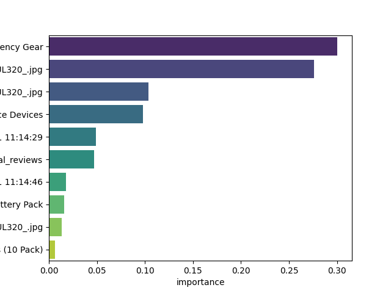